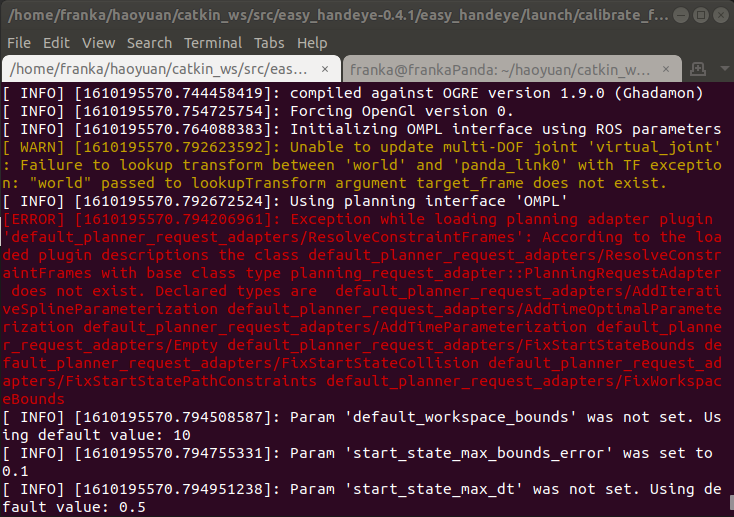
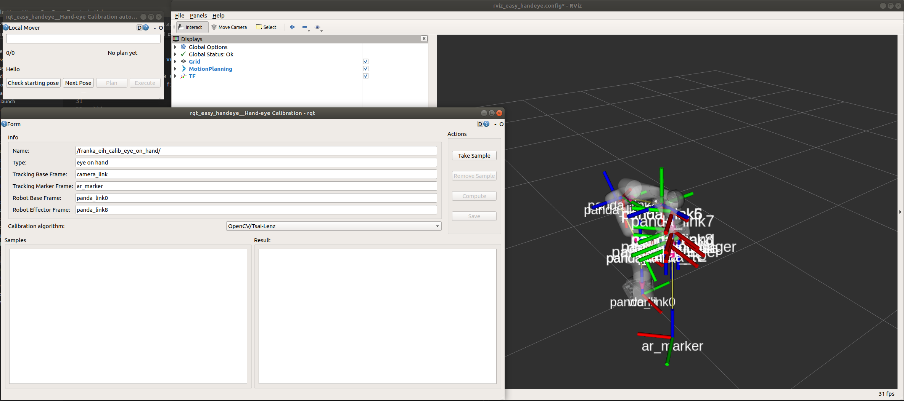
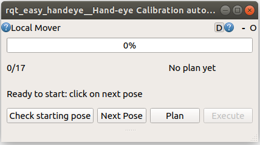
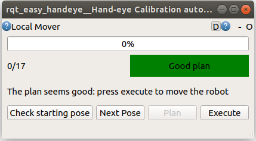
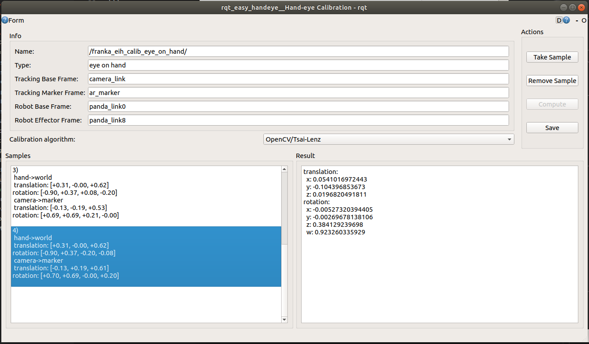

A tutorial on using easy-handeye to calibrate robot arm
Easy-handeye can calibrate both eye-in-hand and eye-on-base robot arm.
Pre-requests
The following pre-requests are some bugs that I met when I first ran Easy-handeye. I cannot make sure all dependencies are listed. Most bugs or errors come from the shortage of ros packages, please install them based on error logs.
1. Make sure ROS and Moveit is successfully installed.
ROS should be installed in desktop-full version. Easy-handeye will rely on moveit by default to automatically sample poses, plan trajectories based on sampled poses and execute plans. After installing Moveit, please run some demo to check, such as this. Don’t be afraid if you see some errors like in the following image, it can still run.

2. If you use anaconda or miniconda, remove conda path from environment variables.
In ROS, most shebang will use /usr/bin/python, but if you have conda added into your path, command python may use ${PATH_TO_CONDA}/bin/python instead. This may result to some terrible faults. So I strongly recommend removing the conda from your environment variables. In this way, python will be clear.
After removing conda, use command
which python
and make sure
/usr/bin/python
is shown.
3. Check python version
In Ubuntu 18.04, the default version of python is 2.7, but some people may change it for convenience. If you find your python version is not 2.7, please change it by the following commands
sudo rm -rf /usr/bin/python
sudo cp /usr/bin/python2.7 /usr/bin/python
4. Install transforms3d
pip install transforms3d
5. Install OpenCV and OpenCV-contrib
pip install opencv-python
python -m pip install opencv-contrib-python
6. Install joint-trajectory-controller
sudo apt-get install ros-melodic-joint-trajectory-controller
7. ROS package
To calibrate, the following two ros packages are needed:
- The package which is responsible for communication with hardware. For example, franka_ros for Franka Emika robot and ur_bringup for UR robot. In most cases, this package need compilation, so make sure they are put under
{$RFLIB}/ros/srcand can be successfully compiled. - The moveit config package of your robot. For example, panda_moveit_config and ur5_moveit_config. In most cases, this package doesn’t need compilation, so please put them under
/opt/ros/melodic/share.
These two packages are used by Moveit.
Usage
In the following parts, a small tutorial on how to write launch files and calibrate robot arm with camera is shown.
Calibrate: Write custom launch files
With easy_handeye, we only need some launch files to automatically calibrate. Create a new launch file which includes the following four parts:
- Include the launch file which is responsible for communication with your hardware.
- Include the tracking system’s launch file, such as
realsense_d435_driverin RFLIB. - Include the moveit stack of your robot.
- Include
easy_handeye'scalibrate.launch, with correctly indicating some parameters:eye_on_hand(bool): true for eye_on_hand case, false for eye_on_base case.namespace_prefix(string): a unique name for each calibration. I strongly recommend using your robot’s name and camera’s name as namespace_prefix, e.g.franka_realsensed435move_group(string): the move_group name in Moveit.robot_base_frame(string): the robot’s base frame tf name in ROS.robot_effector_frame(string): the robot’s end-effector frame tf name in ROS.tracking_base_frame(string): the camera’s frame tf name in ROS.tracking_marker_frame(string): the markers’s frame tf name in ROS (Usually this frame can be calculated by camera, and surely associated withtracking_base_frame).
An example for calibrating Franka is shown here, you can run
roslaunch robot_calibration calibrate_franka.launch robot_ip:=<your_franka_ip> eye_on_hand:=true
to run, if everything works well, you will see something like this.

Just take this eye-on-hand case as an example. Here, you can see an RViz and two GUI windows. In the left-top window, which is rqt_easy_hand GUI, you need to first click Check starting pose, then it will generate some poses of end-effector used for calibration.

You should click Plan to check the trajectory, then Execute to move the real hardware.

After each execution, click Take Sample in the right-bottom window. Then, back to the rqt_easy_hand GUI, click Next Pose and continue a new pose. After all poses have been executed and taken as samples, click Compute to generate the camera’s pose w.r.t. end-effector. Finally, you can save it by clicking Save.

Publish: publish the transform of camera
After calibration, the relating files will be saved on disk. When you start your robot nodes in ROS, you can use publish.launch in easy_handeye, with correctly indicating the following parameters:
eye_on_hand(bool): true for eye_on_hand case, false for eye_on_base case.namespace_prefix(string): a unique name for each calibration. Please make sure this name is exactly the same in calibration parameters.
An example can be seen here. In this file, I also provide the franka visualization node, you can visualize tf in RViz and check the calibration accuracy. To test its accuracy, just slowly move the robot arm, and check whether marker’s frame is fixed.